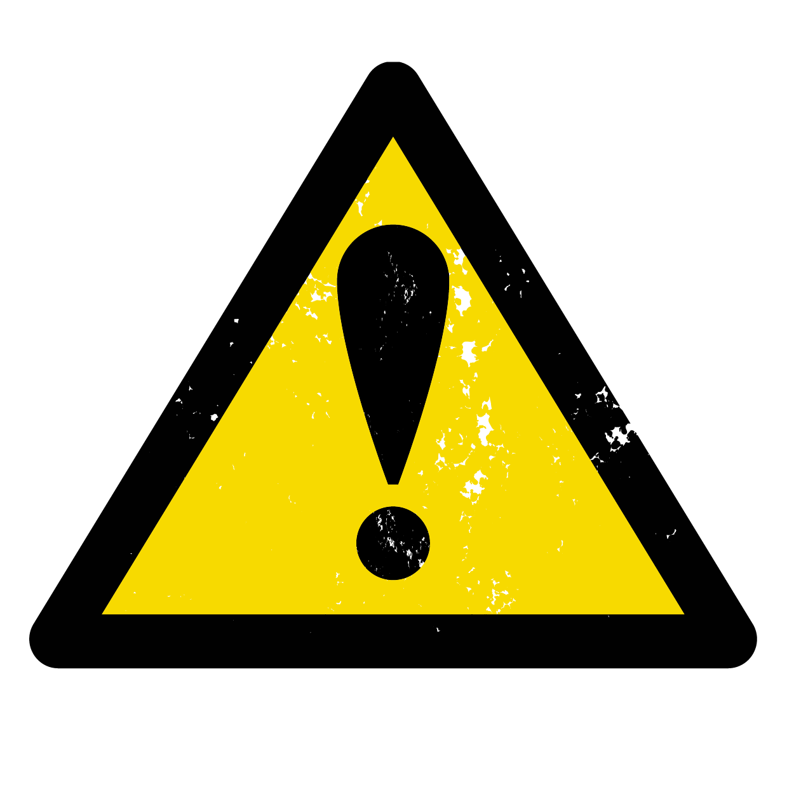

(feat.사이비) 
“대학생 대상 설문조사 하고 있는데 잠깐만 참여해주세요~”
일주일에 세 번 이상 외출하지 않는 걸 원칙으로 삼을 정도로 집순이인 나. 어쩌다 한 번씩 사람 많은 지하철역 쪽으로 외출하면,모르는 사람들이 꼭 나에게 말을 건다. 잠깐 멍하니 있으면
그들은 본론을 꺼내기 시작한다.
아! 또 이상한 사람한테 걸렸구나. 말 걸면 걸던 대로 다 받아주던 시절도 잠시. 길거리에서 그런식으로 5시간쯤 허비하고 나니 길에서 타겟을 물색하는 사람들을 보면 무표정을 짓고 지나가기 시작했다. 해맑게 웃어서는 거친 길 위에서 살아남을 수 없다.
“종교 있으세…”
“죄송합니다! 제가 지금 급히 버스를 타야해서요.”
말을 거는 사람이 있어도 단호하게 거절하고 지나갈 수 있게 되었다. 그러나 수많은 경험으로
단련된 나도 피하지 못한 사이비가 존재한다.
미술학원에서 보조 선생님으로 알바를 하던 겨울이었다. 학생들이 그린 그림을 학원 앞
사람들이 많이 오가는 길거리에 전시하게 되었다. 선생님들이 돌아가며 전시장을 지켜야해서 나 역시 전시장에 나가있었다.
“어머 아이들 그림이 너무 예쁘네요~ 직접 그린 건가요? 학생 실력이 아니다. 잘하네.”
핫팩을 꼭 쥐고 그림에 이상은 없나 둘러보고 있는데, 직장룩을 멋지게 차려입은 여성분이
이야기를 걸어왔다. 학생들이 열심히 그린 그림을 인정받았다는 생각에 흐뭇해져서 경계심이
스르륵 사라졌다.
“약속이 꼬여서 우연히 이쪽에 내리게 됐는데, 전시 하는 거 보고 반가워서 둘러보게 됐네요.
사실 저도 미대 나와서 전시 기획 하거든요.”
“아 정말요? 지금 진행하고 있는 전시 있으세요?”
“네, 이것도 인연인데 전시 보는 거에 관심 있으시면 보러 오실래요? 제가 설명해 드릴게요.”
나중에 카카오톡으로 전시 정보를 보내주겠다는 말에 연락처를 교환했다. 우연하게 만들어진
새로운 인연에 두근거렸다.
설렜던 것도 잠시, 몇 주간 카톡을 주고받지 않아 연락처를 주고 받았다는 사실조차 잊어가고
있을 쯤이었다. 갑자기 카톡알람이 울렸다.
그동안 잘 지내셨나요? 제가 저번에 진행하던 전시는 마무리돼서
다음 전시 때나 보여드릴 수 있을 것 같아요ㅠㅜ
사실 제가 심리상담도 함께 기획하고 있는데, 관심 있으시면 한 번 받아보실래요?
심리상담이면 제가 상담 센터를 가거나 해야하는 건가요?
아뇨! 예린 씨가 편하신 곳에서 만나면 될 것 같아요. 카페 같은 곳도 괜찮고. OO 스타벅스 어떠세요?
음……. 좋아요!
다른 한 분도 상담 받아보고 싶다고 요청하셔서, 혹시 같이 진행해도 될까요? 제 지인이에요.
“네, 저는 상관없어요.”
심리상담을 아무데서나 진행해도 괜찮은 걸까? 잠시 의문이 들었지만, 늘 사람이 많은 곳이니
이상하면 바로 자리를 뜨면 괜찮을 거라는 마음으로 약속 장소에 나갔다.
약속날이 되자, 두 사람과 카페에서 만나 음료와 케이크를 먹으며 각자 뭘 하고 있는지 어떤 성격인지 이야기했다.
특이한 점은, 둘은 서로 친한 사이라고 소개했는데도 특별히 사적인 이야기를 하지 않고 모든
이야기들을 나를 중심으로 풀어갔다. 동등하게 존중받는다고 느껴서 더 친해지고 싶었다.
“자, 그러면 이제 심리 테스트를 시작해볼까요?”
그림을 기반으로 한 테스트였는데, 그림을 그리자 나의 성향이나 기분에 대해서 서술해주었다. 당시에도 심리 상담가가 진행하는 활동이라고 하기엔 인터넷에 떠도는 심리상담과 크게 다를 게 없다고 생각했지만, 별 말 하지 않고 진행했다. 마지막으로 mbti 테스트와 비슷한 형식의
상담지를 작성하고 헤어졌다.
“다음에 또 만나요! 그 때 심리상담 결과 알려줄게요.”
돌아와서 이 우연이 만들어낸 인연이 재미있어서 친구에게 전화를 걸어 조잘조잘 이야기했더니, 친구의 목소리가 점점 어두워지기 시작했다.
“야, 너 그 테스트 내용 좀 자세하게 말해봐.”
구체적으로 어떤 내용인지 말해주니, 친구가 한숨을 푹 쉬더니 나지막히 말했다.
“내가 본 사이비 수법이랑 완전 똑같은데? 링크 보내줬으니 확인해봐라.”
링크를 확인하자, 어떤 테스트인지 토씨 하나 틀리지 않고 똑같아서 소름이 돋았다. 약속 도중
찜찜했지만 모른척 하고 있었던 말들이 하나씩 떠오르기 시작했다.
“종교 있으세요? 저희 둘은 교회 친구거든요.”
“이게 저희가 아직 개발중인 프로그램인데, 원래 유료인 프로그램인데 무료로 해드리는
거거든요. 어디에 내용 막 말하면 안돼요.”
“이거는 종교에 관한 심리거든요.”
“신기하네요! 저는 기독교인이라 십자가 나왔나봐요.”
상담지에 있던 종교와 관련된 문항들까지 쏙쏙 떠오르면서 내가 사이비에 당했다는 확신을 얻었다. 나를 배려해서 사적인 얘기를 하지 않은 게 아니라, 하지 못한 거였구나.
“헐! 내 아까운 시간……. 그래도 네가 알려줘서 다행이다. 아니면 다음에도 만날 뻔."
“너는 돈 같은 거 빌려줄 때 꼭 주변 사람들한테 물어봐라… 사기 당하기 딱 좋다.”
그 이후로는 아무리 좋은 인상을 가진 사람이어도 처음 보는 사이에 함부로 따라가지도 연락처를 알려주지도 않는다. 사람이 주는 느낌은 지극히 주관적인 것이고, 그 사람이 어떤 속마음을 가졌는가까지는 알 수 없다는 것을 절절히 깨달았으니까.